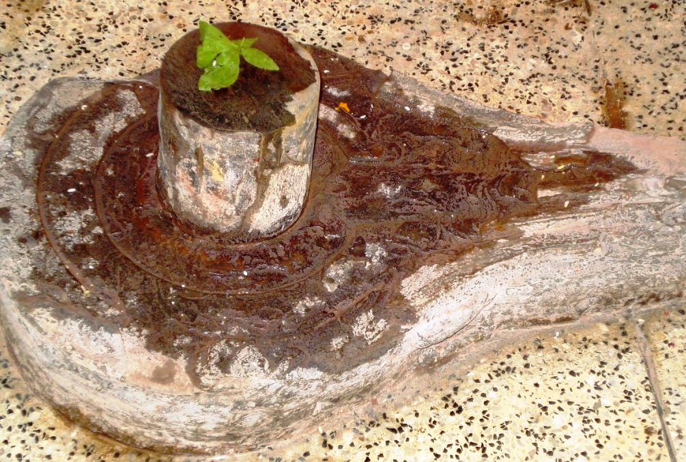

<?xml version="1.0" encoding="UTF-8"?><rss version="2.0"
	xmlns:content="http://purl.org/rss/1.0/modules/content/"
	xmlns:wfw="http://wellformedweb.org/CommentAPI/"
	xmlns:dc="http://purl.org/dc/elements/1.1/"
	xmlns:atom="http://www.w3.org/2005/Atom"
	xmlns:sy="http://purl.org/rss/1.0/modules/syndication/"
	xmlns:slash="http://purl.org/rss/1.0/modules/slash/"
	>

<channel>
	<title>Parvateeshwar &#8211; Varanasi Temples</title>
	<atom:link href="index.html" rel="self" type="application/rss+xml" />
	<link>../../../../../index.html</link>
	<description>Temples of Varanasi as referred to in Kashi Khand</description>
	<lastBuildDate>Thu, 19 Jun 2025 05:16:46 +0000</lastBuildDate>
	<language>en-US</language>
	<sy:updatePeriod>hourly</sy:updatePeriod>
	<sy:updateFrequency>1</sy:updateFrequency>
	<generator>https://wordpress.org/?v=4.6.29</generator>
	<item>
		<title>PARVATEESHWAR</title>
		<link>../../../../../shiva-temples/parvateeshwar/index.html</link>
		<pubDate>Mon, 10 May 2010 15:09:47 +0000</pubDate>
		<dc:creator><![CDATA[admin]]></dc:creator>
				<category><![CDATA[Other Shiva Temples (L-R)]]></category>
		<category><![CDATA[Parvateeshwar]]></category>
		<category><![CDATA[Shiva Temples]]></category>
		<category><![CDATA[mahad]]></category>
		<category><![CDATA[parva]]></category>
		<category><![CDATA[trilochan]]></category>

		<guid isPermaLink="false">../../../../../p=406.html</guid>
		<description><![CDATA[Once Goddess Parvaty asked Lord Shiva the reason for all round happiness in Kashi. Lord Shiva replied that in various other places, if there is a Shiv Ling, there will be happiness in the area in the radius of about 10 miles. Whereas in Kashi there are Shiv Lings all over the place and thus [&#8230;]]]></description>
				<content:encoded><![CDATA[<p>Once Goddess Parvaty asked Lord Shiva the reason for all round happiness in Kashi. Lord Shiva replied that in various other places, if there is a Shiv Ling, there will be happiness in the area in the radius of about 10 miles. Whereas in Kashi there are Shiv Lings all over the place and thus the happiness is manifold.  This is one of the reasons for Kashi to be referred to as Ananda Van.  A person who installs a Shiv Ling in Kashi will enjoy ultimate happiness.</p>
<p>Hearing this, Goddess Parvaty expressed her desire to install one Shiv Ling and sought permission from Lord Shiva.  If a pativrata wife (wife fully devoted to her husband) does a good job after getting due permission from her husband, she will be successful in her venture.  After getting permission, Goddess Parvaty installed a Shiv Ling, near Mahadev Ling, which came to be called as Parvateeshwar.</p>
<p></p>
<p style="text-align: center;"><strong>(PARVATEESHWAR)</strong></p>
<p>Kashi Khand, Chapter 93 states that a devotee who worships Parvateeshwar is cleansed of even the worst sin of Brahma Hatya. The devotee who regularly worships this Ling will himself take form of a Shiv Ling in Kashi after his death.</p>
<p>Special importance has been attached to Chaitra Month (March-April) Shukla Paksha Triteeya (3<sup>rd</sup> day after Amavasya) and Kashi Khand has stated the importance of the ritual in the following shlok.</p>
<p>&nbsp;</p>
<p><strong>&#8212;&#8212;&#8212;&#8212;&#8212;&#8212;&#8212;&#8212;&#8212;&#8212;&#8212;&#8212;&#8212;&#8212;&#8212;&#8212;&#8212;&#8212;&#8212;&#8212;&#8212;&#8212;&#8212;&#8212;&#8212;&#8212;&#8212;&#8212;&#8212;&#8212;&#8212;&#8212;&#8212;&#8212;-</strong></p>
<p><strong>Kashi Khand, Chapter 90, Shlok 22</strong></p>
<p><strong>चैत्र शुक्ल तृतीयायां पार्वतीशसमर्चनात्</strong></p>
<p><strong>इह सौभाग्यमाप्नोति परत्र च शुभाम् गतिम्</strong></p>
<p>&nbsp;</p>
<p><strong>Performing pooja of Paarvateeshwar on Chaitra Month, Shukla Paksha Triteeya will give all fortune to the devotee in this world as also beneficial status in heaven.  </strong></p>
<p><strong>&#8212;&#8212;&#8212;&#8212;&#8212;&#8212;&#8212;&#8212;&#8212;&#8212;&#8212;&#8212;&#8212;&#8212;&#8212;&#8212;&#8212;&#8212;&#8212;&#8212;&#8212;&#8212;&#8212;&#8212;&#8212;&#8212;&#8212;&#8212;&#8212;&#8212;&#8212;&#8212;&#8212;&#8212;&#8212;</strong></p>
<p>&nbsp;</p>
<p><strong><span style="text-decoration: underline;">LOCATION OF PARVATEESHWAR</span></strong></p>
<p>Parvateeshwar is located at A-3/92, Aadi Mahadev, Trilochan.  The temple is approachable from Birla Hospital after Machhodari upto which place, people can travel by Auto or Cycle Rickshaw. Alternatively, they can have a boat ride upto Trilochan Ghat and climb the steps.</p>
<p>&nbsp;</p>
<p><strong>Please watch our YouTube Video about Parvateeshwar at following Link</strong></p>
<p>&nbsp;</p>
<p><a href="https://www.youtube.com/watch?v=BeGKzh9WsWk&amp;t=31s">https://www.youtube.com/watch?v=BeGKzh9WsWk&amp;t=31s</a></p>
<p>&nbsp;</p>
<p>&nbsp;</p>
<p><strong><span style="text-decoration: underline;">TYPES OF POOJAS</span></strong></p>
<p>The temple is open from 05.00 a.m to 9.00 p.m.   Mangala Aarti is performed at 05.00 a.m., Shringar  at 06.30 a.m., and Aarti at 07.00 a.m. The temple is open till 09.00 p.m.</p>
<h2></h2>
]]></content:encoded>
			</item>
	</channel>
</rss>
